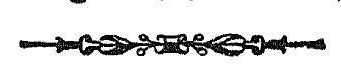

इति श्रीमन्महामाहेश्वराचार्यवर्य श्रीमदभिनवगुप्तवि-
रचिते तत्रालोके
श्रीजयरथविरचितविवेकाभिख्यव्याख्योपेते कला दिप्रदर्शनं
नामैकादश माह्निकं समाप्तम् ॥ ११ ॥
११८ श्लो० ] एकादशमाह्निकम् । ९१
नोपसंहरति
इदानीमाह्निकार्थमेव श्लोकस्य प्रथमार्धे-
तदित्थमेष निर्णीतः
कलादेर्विस्तरोऽध्वनः ॥ ११८ ॥
स्पष्टमिति शिवम् ॥ ११८ ॥
निःशेषषड्विधाध्वप्रविभागसतत्त्वविद्व्यधाद्विवृतिम् ।
एकादशाह्निके किल जयरथपदलाञ्छनः कश्चित् ॥
इति श्रीमन्महामाहेश्वराचार्यवर्य श्रीमदभिनवगुप्तवि-
रचिते तत्रालोके
श्रीजयरथविरचितविवेकाभिख्यव्याख्योपेते कला दिप्रदर्शनं
नामैकादश माह्निकं समाप्तम् ॥ ११ ॥

श्रीमत्प्रताप भूभर्तुराज्ञया प्रीतये सताम् ।
मधुसूदनकौलेन संपाद्यायं प्रकाशितः ॥
श्रीसाम्बशिवार्पणमस्तु ॥